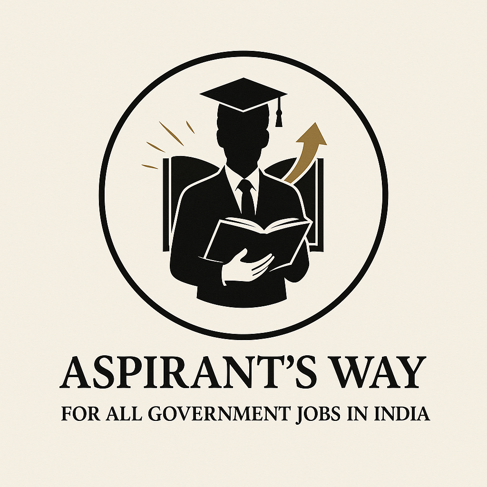

Amazon MAN1 (DXM2 → MAN1) and MBA General Manager placement in Manchester. Focused on ownership, measurable results, and safe, productive team execution in high-volume fulfilment. Impact & evidence.
Targeting operations leadership (e.g. Area Manager path). I use practical tools and dashboards where they improve clarity and decision-making.
Resume updated 31 March 2026 — Amazon & GM highlights, portfolio-linked Aspirants Way, Area Manager positioning.
Hello! I'm Jagapathi Nayak Banoth, an MBA graduate from the University of Central Lancashire, UK. I focus on operations first—Amazon fulfilment today and MBA GM placement that already carried manager-level scope. I use data, process design, and practical tools when they make performance easier to see and improve. Path from BiPC to commerce and MBA: adaptability and rigour on the floor and in the numbers.
Warehouse Associate at Amazon—strong performance in safety, productivity, and team support during high-volume shifts; I help sustain standards and flow. On placement I ran day-to-end restaurant operations. I use data and practical tools where they make performance easier to run and improve.
On the ground: family agricultural trading with clear financial workflows, and Aspirants Way—two products: aspirantsway.com (student prep, live) and institute.aspirantsway.com (institute operations console, ~90% complete)—see Impact and Selected projects.
Years UK professional roles
Compliance Record
Selected projects (site)
Safety Incidents
High-volume fulfilment and a manager-scoped MBA placement—metrics, safety, people, and continuous improvement in one view.
Role: Warehouse Associate (individual contributor). Took responsibility for shift-level performance—pace, accuracy, handoffs, and safety. Voluntary DXM2 → MAN1 (July 2025); quick ramp on new layouts and standards while sustaining output. AU, BU, UTK for inventory flow.
Supported team coordination, standards, and on-floor decision-making during high-volume shifts.
MBA placement with manager-level scope: responsible for day-to-day operational outcomes—staff, inventory, financial oversight, service standards, and compliance—under placement supervision.
Outcomes from Amazon and GM placement, how I perform under pressure, and a concise Amazon Leadership Principles map. Full role detail sits in Experience.
Strategic menu innovation and market research implementation
POS system optimization and operational improvements
Strategic management and process optimization
Customer satisfaction through service excellence
Strong compliance management across multiple locations
Successfully negotiated supplier agreements and inventory operations
Consistently above target during peak and non-peak periods
100% compliance mindset; zero incidents across DXM2 and MAN1
Cross-trained across four+ functions (stow, pick, pack, sort)
Voluntary DXM2 → MAN1 transfer with sustained performance and quick ramp
Tools and public work that support operations and stakeholder communication. Aspirants Way is two products (student site + institute console); deep dive in the featured section below.
aspirantsway.com — live. Self-prep, practice, tests, and personal progress for competitive exam aspirants—not institute administration.
institute.aspirantsway.com — active development (~90%). Coaching institutes run their centres on the platform—batches, students, assignments, institute-level tracking—same metrics backbone as the student app.
Transferred DXM2 → MAN1 (July 2025) by choice; adapted to new layouts and processes while sustaining productivity and safety
Public site with case-style write-ups, resume, and contact—clear communication for recruiters and hiring managers
Hands-on leadership in shift-paced settings—standards, calm under pressure, outcomes in the metrics.
Led and coordinated people during peak volume—communication, pacing, and follow-through when stakes are high
Structured workflows, handoffs, and task balance so the floor or service line keeps moving
Handled staff shortages, demand spikes, and surprises—rebalanced resources while protecting quality and safety
Maintained morale and standards; recognition and coaching tied to measurable output
Warehouse pods and multinational crews; kitchen, service, and support in hospitality—one operational rhythm
Managed team rotations and schedule changes across different operational units
Maintained professional standards and addressed compliance issues proactively
Critical thinking to identify financial discrepancies and operational gaps
Reward systems and recognition programs to maintain team morale
Compassionate leadership and democratic management approach
Accountability in ops (site moves, peak shifts) and in delivery—tools and workflows applied when they remove friction and speed up decisions
Connects customer or learner outcomes to process design and measurable stages—handoffs, quality checks, reporting
Path from science (BiPC) to commerce, MBA, and hands-on systems; adopts tools that improve clarity, speed, and auditability
Amazon Leadership Principles illustrated with examples from fulfilment and GM placement.
Voluntary DXM2 → MAN1; sustained results through the move. Strong bias for ownership—safety, pace, and helping the team deliver output against targets
Strong productivity; GM placement outcomes (sales, time, cost) backed by data and execution
POS and workflow improvements; Aspirants Way split into student and institute products with shared metrics—practical tracking and dashboards that reduce friction
Operations → MBA → measurable systems for running better operations (e.g. KPI-led learning ops); continuous improvement across fulfilment, hospitality, and stakeholder-facing delivery
Operations and people leadership first, with operational systems and tool depth in the categories below.
Practical tools and dashboards where they improve clarity and decision-making for the operation.
Aspirants Way shows KPIs, workflows, and reporting at scale (student product live; institute console in late-stage build). Related metrics and leadership examples are under Impact & evidence and Experience.
Advanced business application developed specifically for my family's agricultural trading operations. Features comprehensive financial calculations, transaction tracking, profit/loss analysis, and automated record-keeping to support real-world trading decisions and business growth.

aspirantsway.com — for students preparing for competitive exams on their own: study paths, practice, mock tests, scoring, and personal progress and weak-area signals—not institute administration.
Part of the Aspirants Way product family; pairs with the institute console card beside it.
institute.aspirantsway.com — different product from the student site: coaching institutes run their centres on the platform—batches, enrolled students, assigned tests, and institute-level tracking and reporting.
Government exam prep vertical; institute portal in active development (~90% complete).
Featured: Aspirants Way — student prep platform + institute operations console
Aspirants Way (aspirantsway.com) is complete and live. Institute portal (institute.aspirantsway.com) is in active development, approximately 90% complete—final features and polish in progress.
A performance tracking and evaluation system for competitive exam prep, split into a student-facing product and an institute-facing product—same platform logic, different jobs: individual preparation vs coaching institutes running their centres on the platform.
For students preparing on their own. They use Aspirants Way as their prep environment: study paths, practice, mock tests, weak-area signals, and personal progress—not institute administration.
For coaching institutes. This is not the same as the student app: institutes run their centres on the platform—enrol and organise students, run batches, assign tests, and track performance at institute level (cohorts, comparisons, reporting).
aspirantsway.com → student experience (web / mobile) for preparation and personal analytics. institute.aspirantsway.com → institute console so coaching institutes run their centres on the platform and track their students. Platform / super-admin layers sit above for oversight. One backbone for data, scoring, and permissions so student numbers and institute reports never disagree.
Student: SSC aspirant on aspirantsway.com → topic tests → weak areas flagged → personal nudges. Institute: a coaching centre running on the platform via institute.aspirantsway.com sees the same cohort’s progress for batch management and reporting.
Role-based access, institute-scoped data, and controlled scoring—so results are fair, traceable, and separated between customers—same instinct as access control and quality gates in physical operations.
Successfully completed comprehensive 2-year MBA program with Professional Placement, gaining international business perspective and practical industry experience. The program combined 3 taught semesters (16-18 months) with a 6-month professional work placement, providing both theoretical knowledge and real-world application in global business environments.
Completed comprehensive 3-year Bachelor of Commerce degree with 70% marks from one of India's prestigious institutions affiliated with Osmania University. The curriculum provided extensive foundation in business fundamentals, accounting principles, and management concepts that directly complement my MBA and operations-focused career.
Successfully completed Intermediate (10+2) education in Biology, Physics, Chemistry (BiPC) stream with excellent 85% marks from Telangana State Model School. This rigorous 2-year science program developed strong analytical thinking, hypothesis testing, and systematic problem-solving approaches that support metrics-driven operations and structured decision-making.
Achieved outstanding 7.5 GPA in Secondary School Certificate examinations from the same prestigious Telangana State Model School, demonstrating consistent academic excellence and institutional loyalty. Strong performance in mathematics and sciences established the foundational numerical and logical reasoning skills that support my current technical career and business analysis capabilities.
I'm open to operations and leadership roles, and conversations where systems thinking and measurable delivery matter.